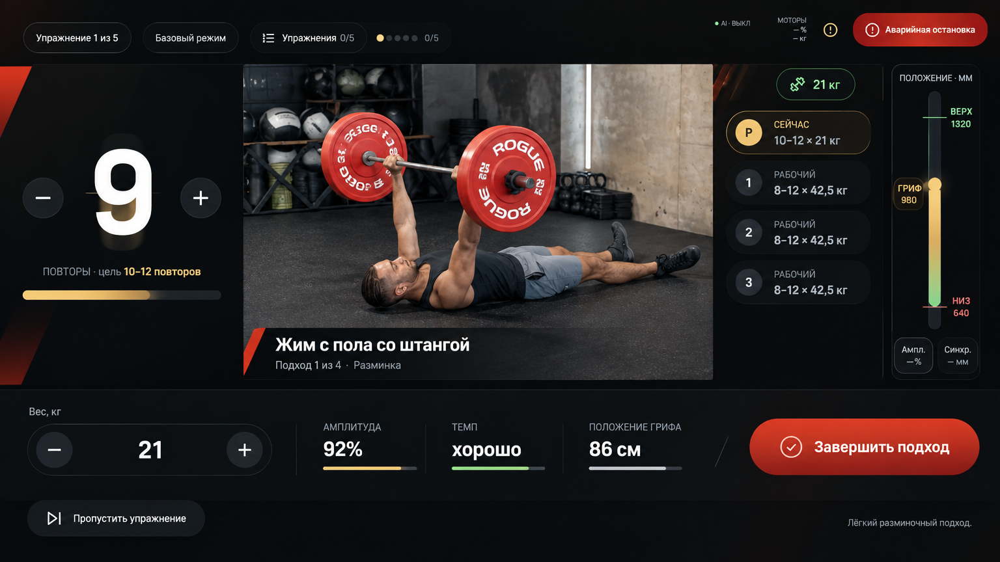
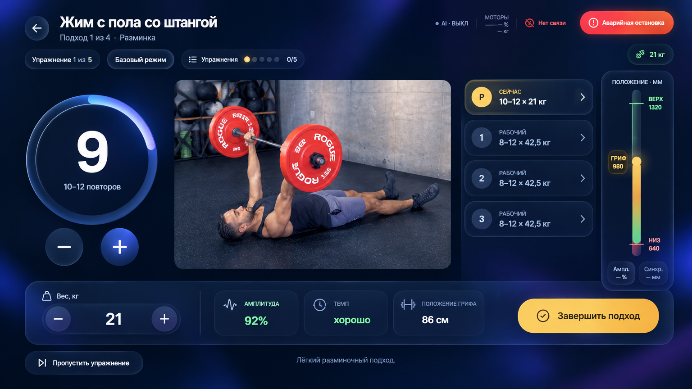
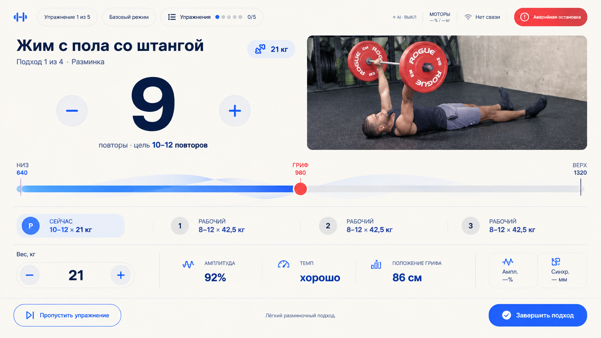
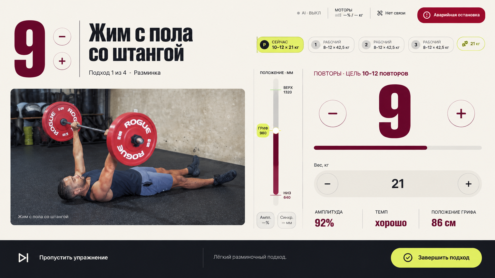

Forma — новый характер интерфейса
Четыре арт-направления вместо очередного набора цветовых тем. Изображения статичные; описания движения — предложения для будущего прототипа. Приложение не изменено.
01 · Live Broadcast / Спортивная трансляция
Кинематографичная демонстрация, счётчик как табло, подходы как программа эфира. Нагрузка и показатели собраны в нижнюю консоль. Движение: короткая смена цифры на засчитанном повторе, спокойное заполнение прогресса.

Нужно исправить перед реализацией: цвет завершения отличается от аварийной остановки; подпись отсутствия связи должна быть явной, не только значком.
02 · Spatial Flow / Пространственный интерфейс
Объёмный кольцевой счётчик, мягкая глубина, самостоятельная панель подходов и общая нижняя консоль. Движение: плавный ход маркера и короткое заполнение кольца на завершённом повторе. Без постоянного пульсирования.

Генератор добавил кнопку назад: её не следует переносить автоматически без проверки существующего сценария. Видео и прочие блоки всё ещё близки к традиционной трёхколоночной схеме.
03 · Movement Rhythm / Ритм движения
Само движение организует экран: горизонтальная дорожка проходит через всю композицию. Счётчик и видео выше неё, план и показатели ниже. Движение: маркер следует реальному положению грифа; декоративная волна не должна изображать несуществующее измерение.

Это наиболее цельная новая компоновка в серии. При реализации нужны точные деления шкалы, проверка размеров кнопок и отображение режима настройки грифа.
04 · Athletic Editorial / Спорт-постер
Крупная узкая типографика, молочный фон, бордовый и дозированный лимонный. Движение: активная отметка подходит к следующему этапу только после завершения подхода.

Этот вариант — эскиз направления: модель продублировала счётчик и не сохранила всю верхнюю навигацию. Дубликат нужно удалить, навигацию восстановить. Не использовать как готовую спецификацию.
Для любой анимации: неподвижные зоны касания и аварийная остановка, отсутствие стробирования и поддержка уменьшения движения. Мелкие тексты и значения во всех генерациях требуют сверки.